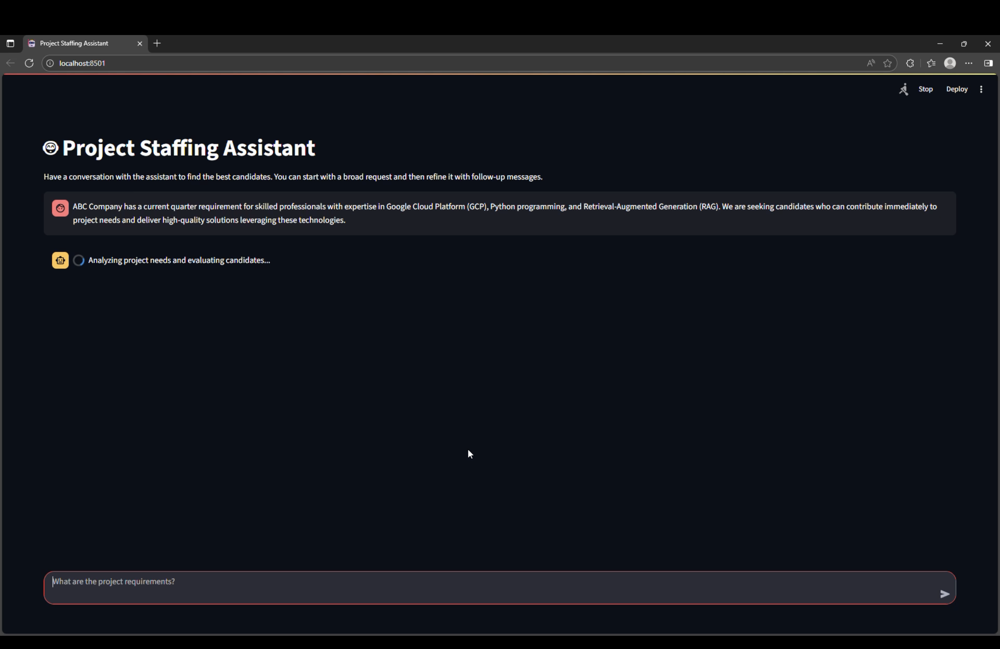

06 / Applied AI prototype
Project staffing assistant
A retrieval-driven assistant that turns conversational project requirements into candidate matching and skill-gap analysis.

The problem
Turn project requirements into a useful candidate shortlist.
I developed a multi-agent RAG prototype using the AI Refinery SDK and a FAISS vector index to match employees with projects from conversational requirements.
- 01Understand requirementsUse the conversation to capture the project and its required skills.
- 02Retrieve & refineFAISS retrieval, a BAAI/bge-reranker-large model, and LLM-based context compression.
- 03Present the analysisRanked candidates, skill gaps, training suggestions, and readiness estimates in a Streamlit UI.
Implementation
Session-aware analysis behind a conversational UI.
A Flask backend connects retrieval and agent workflows to Streamlit. A persistent JSON-based state manager supports multi-turn interactions. The prototype explores how retrieval, reranking, and compressed context can support staffing decisions.
AI Refinery SDKFAISSRAGRerankingFlaskStreamlit